Activity: Corner treatment options
Overview
In this activity, use each of the corner treatment options to observe the results.
Copy C-channel35.par, C-channel65.par, C-channel95.par, square30.par, square45.par, square60.par and square90.par to the Program Files/Siemens/Solid Edge 2023/Frames folder.
This step makes these components available when selecting the Frame–Select Cross Section Component button.
Open corner_options.asm.
Click Tools→Environs→Frame.
Begin by placing frames using the default option (miter).
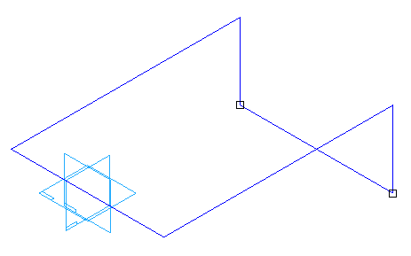
Choose Home→Frame→Frame  .
.
Notice that miter is the default option on the Frame Options dialog. Click Cancel.
On the Frames command bar, click the Frame–Select Cross Section Component button  .
.
Select square30.par and then click Open.
Click the “Do not show this message again.” button and then click OK.
Set the Select field to Single, then drag a fence around all of the geometry, and then right-click. Do not click Finish. Notice all corners are mitered.
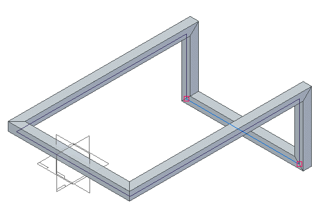
Choose Frame Options.
Click the Butt option and ensure the Preferred Axis is set to the X axis. Click Apply.
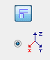
Notice the butt result. The frame members butt into other frame members that are parallel to the X axis. Do not click Finish.
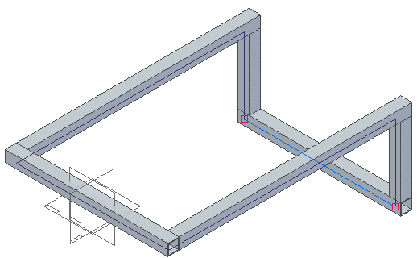
Set the Preferred Axis to the Y axis and then click Apply.
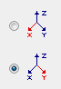
Notice the result. The frame members now butt into other frame members that are parallel to the X axis. Do not click Finish.
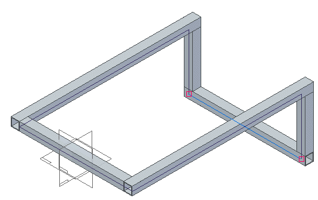
Click the Extend frame component option and type 80 in the distance field.
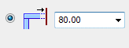
Click Apply. Notice the extend result. A negative value shortens the members. Do not click Finish.
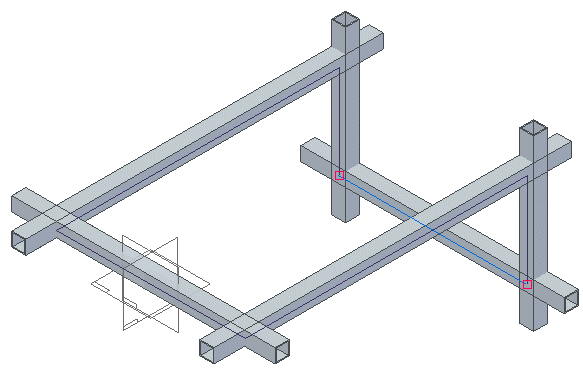
Click the No corner treatment option and click Apply.
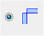
Notice that no members trim. Each frame is the length of the path.
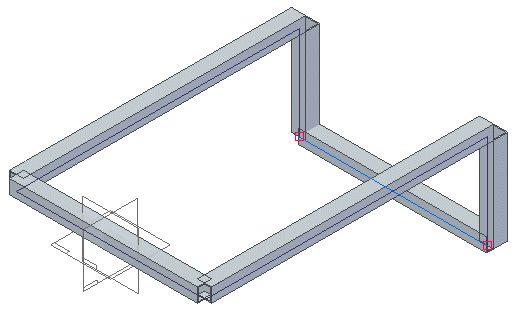
Notice in PathFinder that there are six frame components created.
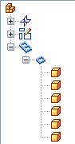
Click the Apply radius corner option and type 50 for the radius value.
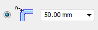
Click OK and then click Finish.
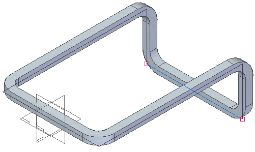
On the Frame Options dialog box, click Cancel.
Notice in PathFinder that the radius option only creates one frame component. When a radius is applied to a corner, the two members that meet at that corner become one frame.
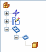
Exit the assembly file and do not save. Click No to save the Display Configuration.
Change the corner treatment options at any time during the creation of frame components. Once the command finishes, go back and edit the frame definition to change the corner options.
Click the Close button in the upper - right corner of the activity window.
-
What are the four corner treatment options?
-
Name the three corner treatments and give a brief description of each.
-
Where are the sample frame components found?
-
What is the first step in the Frame command?
-
What controls where a frame component positions on the path?
-
How do you change how a frame positions on a path?
-
What are the four corner treatment options?
Apply corner treatment.
Apply radius.
Extend frame component.
No corner treatment.
-
Name the three corner treatments and give a brief description of each.
Miter - A miter cut is applied to corner(s).
Butt1 - Material is removed from the longest member.
Butt2 - Material is removed from the shortest member.
-
Where are the sample frame components found?
Program Files\Solid Edge ST5\Frames folder
-
What is the first step in the Frame command?
Select path.
-
What controls where a frame component positions on the path?
When a frame component is created, you can define a default snap point. The frame snap point lies on the path.
If a snap point does not exist in the frame component file, the Frame command defaults to the centroid of the 2D cross section.
-
How do you change how a frame positions on a path?
On the frame command bar, click the Edit cross sections option. Click the define handle point and then select a new handle point on the cross section.